Back to ProjectsTorna a Progetti
AODCS Analysis and Design for the 6U HyonoSat CubeSat
Team project, Spacecraft Design, Sapienza University of Rome, 2020/2021
Progetto di gruppo, Spacecraft Design, Sapienza Università di Roma, 2020/2021
HyonoSat is a 6U CubeSat for Earth observation, designed by the whole Spacecraft Design class: a hyperspectral camera for land, water and atmosphere, and two GPS receivers to measure the electron content of the ionosphere. Our team of seven designed its attitude and orbit determination and control system (AODCS), which has to keep the camera and the S-band antenna pointed at the Earth, hold the orbit and bring the satellite down at the end of the mission. We worked in MATLAB, STK and GMAT, together with the teams designing the other subsystems.
HyonoSat è un CubeSat 6U per l'osservazione della Terra, progettato da tutto il corso di Spacecraft Design: una camera iperspettrale per suolo, acque e atmosfera, e due ricevitori GPS per misurare il contenuto elettronico della ionosfera. Il nostro gruppo di sette ha progettato il sottosistema di determinazione e controllo di assetto e orbita (AODCS), che deve tenere la camera e l'antenna in banda S puntate verso la Terra, mantenere l'orbita e far rientrare il satellite a fine missione. Abbiamo lavorato in MATLAB, STK e GMAT, insieme ai gruppi che progettavano gli altri sottosistemi.
- 6UCubeSat in a 500 km Sun-synchronous orbitCubeSat in orbita eliosincrona a 500 km
- < 1°nadir pointing errorerrore di puntamento al nadir
- 30°/sinitial tumbling damped by the B-dotrotazione iniziale smorzata dal B-dot
- 235 daysto deorbit, instead of 4 yearsper il rientro, invece di 4 anni
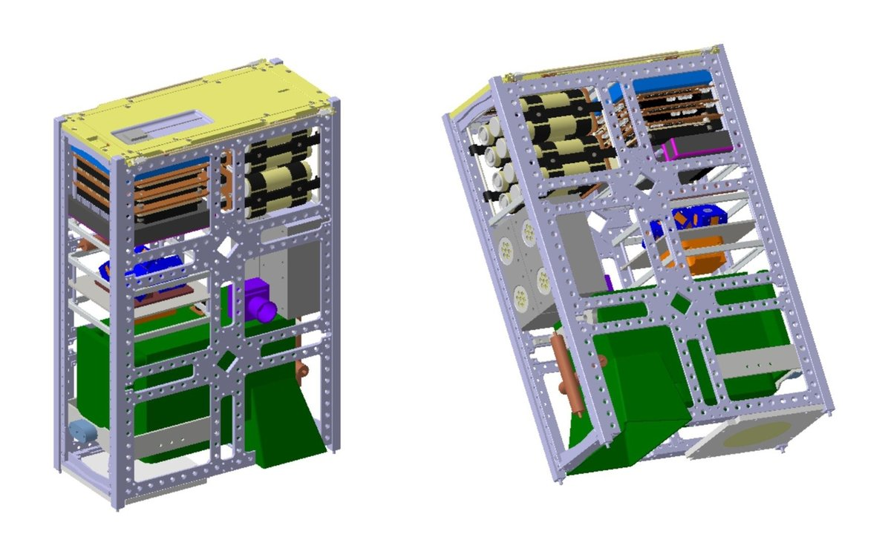
Sensors and actuatorsSensori e attuatori
After a market survey of CubeSat components, we chose the hardware for accuracy, mass, power and cost, and placed it on the satellite with STK so that each sensor sees what it needs: the star tracker looks at deep space on the side away from the Sun, the sun sensor is on the face that sees the Sun for part of the orbit.
Dopo un'analisi di mercato dei componenti per CubeSat, abbiamo scelto l'hardware in base ad accuratezza, massa, potenza e costo, e lo abbiamo disposto sul satellite con STK in modo che ogni sensore veda ciò che gli serve: lo star tracker guarda lo spazio profondo dal lato opposto al Sole, il sensore solare è sulla faccia che vede il Sole per parte dell'orbita.
- Sensors. A star tracker (30 arcsec), a two-axis sun sensor, a three-axis magnetometer and an inertial measurement unit, plus the GNSS receiver of the payload.
- Actuators. Three magnetorquers, one per axis, four reaction wheels in a pyramid, and two multiFEEP electric thrusters for orbit maintenance.
- Sensori. Uno star tracker (30 arcsec), un sensore solare a due assi, un magnetometro a tre assi e un'unità di misura inerziale, più il ricevitore GNSS del payload.
- Attuatori. Tre magnetorquer, uno per asse, quattro ruote di reazione a piramide, e due propulsori elettrici multiFEEP per il mantenimento dell'orbita.
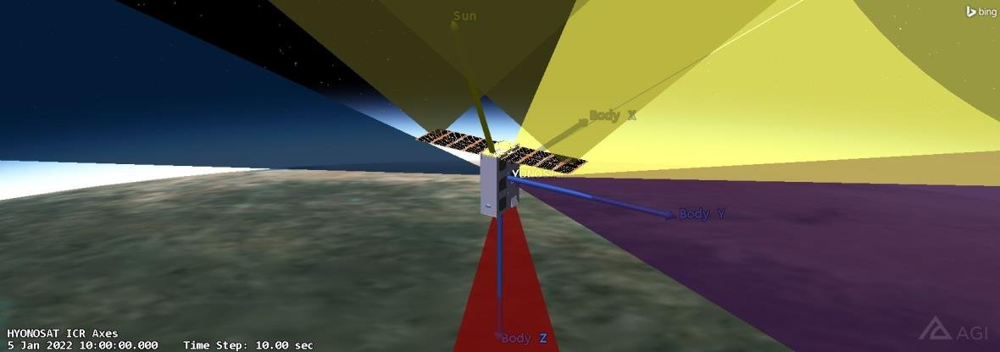
Orbit and environmentOrbita e ambiente
HyonoSat flies a noon and midnight Sun-synchronous orbit at about 500 km, inclined 97.4°. We propagated it in STK with J2 and modelled the Earth's magnetic field both as a tilted dipole and with the IGRF model, which agree closely; the IGRF field drives the magnetometer and magnetorquer simulations. The worst case disturbance torque, summing drag, magnetic, solar radiation and gravity gradient, is 1.4 × 10⁻⁶ N·m, with drag the largest at this altitude.
HyonoSat vola in un'orbita eliosincrona mezzogiorno e mezzanotte a circa 500 km, inclinata di 97,4°. L'abbiamo propagata in STK con J2 e abbiamo modellato il campo magnetico terrestre sia come dipolo inclinato sia con il modello IGRF, che concordano bene; il campo IGRF alimenta le simulazioni di magnetometro e magnetorquer. La coppia di disturbo nel caso peggiore, sommando resistenza aerodinamica, disturbo magnetico, pressione di radiazione solare e gradiente di gravità, è 1,4 × 10⁻⁶ N·m, con la resistenza aerodinamica dominante a questa quota.
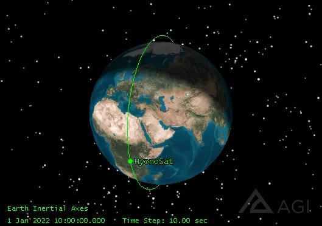
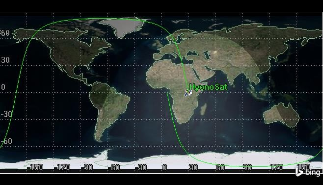
Orbit determination and controlDeterminazione e controllo d'orbita
We compared three ways to know where the satellite is: SGP4 propagation from TLEs generated in STK, batch estimation from range and range rate measured by ground stations, and batch estimation from the onboard GNSS receiver, both in GMAT. The GNSS receiver is the most accurate and is already on board for the payload, so it was our choice.
Abbiamo confrontato tre modi per sapere dove si trova il satellite: la propagazione SGP4 da TLE generati in STK, la stima batch da misure di range e range rate delle stazioni di terra, e la stima batch dal ricevitore GNSS di bordo, entrambe in GMAT. Il ricevitore GNSS è il più accurato ed è già a bordo per il payload, quindi è stata la nostra scelta.
- Orbit maintenance. A Lyapunov feedback law on equinoctial elements commands two multiFEEP thrusters at half thrust, firing in sunlight while the payload is off. It keeps the orbit within the 20 km band and the inclination on target for the 5 year mission, also after an initial injection error.
- Deorbiting. We compared natural decay, a drag sail and a dedicated thruster. Left alone, HyonoSat reenters in about 4 years, well within the 25 year rule; turning the steerable solar panels into the flow brings this down to about 235 days with no extra hardware, which was our choice.
- Mantenimento dell'orbita. Una legge di controllo di Lyapunov sugli elementi equinoziali comanda due propulsori multiFEEP a metà spinta, accesi alla luce del Sole mentre il payload è spento. Mantiene l'orbita entro la fascia di 20 km e l'inclinazione sul valore nominale per i 5 anni di missione, anche dopo un errore iniziale di immissione.
- Rientro. Abbiamo confrontato il decadimento naturale, una vela di resistenza e un propulsore dedicato. Da solo, HyonoSat rientra in circa 4 anni, ben entro il limite di 25 anni; orientando i pannelli solari mobili controvento si scende a circa 235 giorni senza hardware aggiuntivo, ed è stata la nostra scelta.
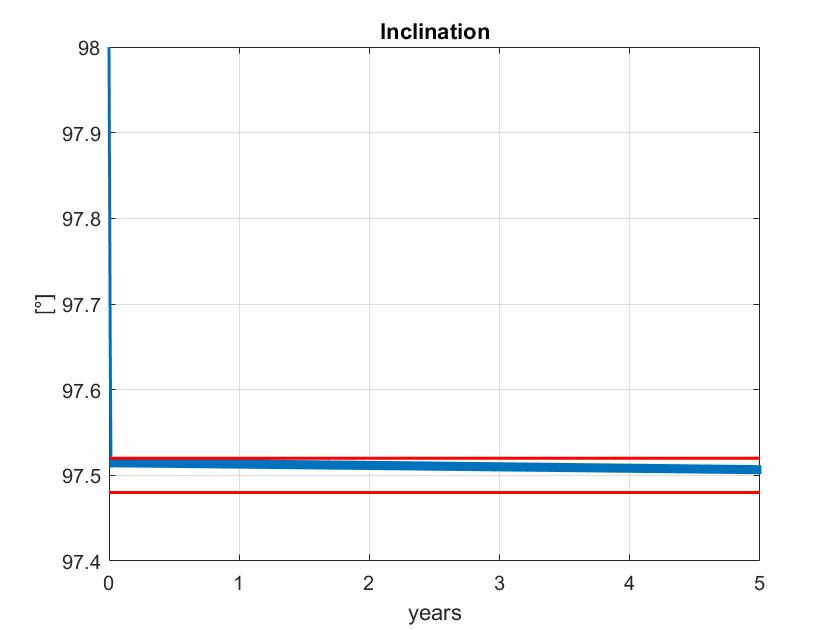
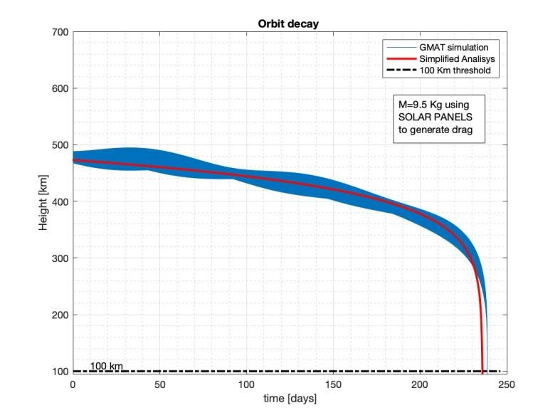
Attitude determinationDeterminazione d'assetto
From STK we generated 15 minutes of nadir pointing attitude and built simulated measurements with the noise of our sensors: three stars from the star tracker, the Sun direction from the sun sensor, which is lost in eclipse after 10 minutes, and gyro rates with noise and drifting bias. We estimated the attitude with TRIAD, QUEST and a multiplicative extended Kalman filter, which also estimates the gyro bias. The Kalman filter gives the smallest errors and uncertainties, because it carries the memory of past measurements instead of solving each instant on its own.
Da STK abbiamo generato 15 minuti di assetto in puntamento al nadir e costruito misure simulate con il rumore dei nostri sensori: tre stelle dallo star tracker, la direzione del Sole dal sensore solare, che si perde in eclisse dopo 10 minuti, e le velocità dei giroscopi con rumore e bias variabile. Abbiamo stimato l'assetto con TRIAD, QUEST e un filtro di Kalman esteso moltiplicativo, che stima anche il bias dei giroscopi. Il filtro di Kalman dà gli errori e le incertezze più piccoli, perché conserva la memoria delle misure passate invece di risolvere ogni istante da solo.
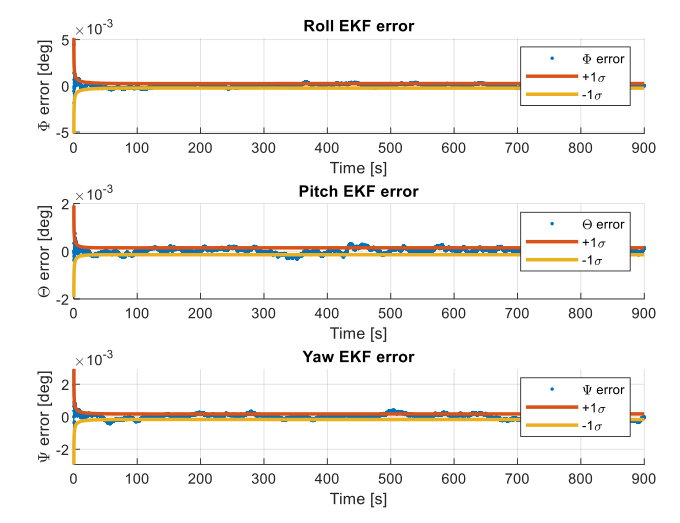
Attitude controlControllo d'assetto
The control has to bring the satellite from the tumbling after release to stable nadir pointing, and keep it there against the disturbances.
Il controllo deve portare il satellite dalla rotazione incontrollata dopo il rilascio a un puntamento al nadir stabile, e mantenerlo contro i disturbi.
- Detumbling. A B-dot controller uses only the magnetometer and the three magnetorquers, so it runs on a simple onboard computer. Starting from 30°/s on every axis, it damps the rotation within a few orbits, with the magnetorquers using their boost mode only in the first minutes.
- Linear nadir pointing. With PD and PID controllers against the worst case disturbance, we compared three actuator sets: three magnetorquers, two magnetorquers and one reaction wheel, and four reaction wheels. The PD leaves an error of about half a degree, the PID cancels it. We chose four wheels, which keep full control if one fails.
- Nonlinear nadir pointing. A quaternion feedback law, proved stable with Lyapunov and LaSalle, takes the satellite to the commanded attitude along the shortest path. Its gain ramps up during the first 10 minutes to keep the wheel torques within their limits.
- Desaturation. Disturbances keep loading the wheels with momentum. When they reach their maximum speed, the magnetorquers unload them in about 9 minutes, every 3.1 hours on average, while the pointing error stays below 7°; in normal pointing it is below 1°.
- Detumbling. Un controllore B-dot usa solo il magnetometro e i tre magnetorquer, quindi gira su un computer di bordo semplice. Partendo da 30°/s su ogni asse, smorza la rotazione in poche orbite, con i magnetorquer in modalità boost solo nei primi minuti.
- Puntamento al nadir lineare. Con controllori PD e PID contro il disturbo nel caso peggiore, abbiamo confrontato tre configurazioni di attuatori: tre magnetorquer, due magnetorquer e una ruota di reazione, e quattro ruote di reazione. Il PD lascia un errore di circa mezzo grado, il PID lo annulla. Abbiamo scelto quattro ruote, che mantengono il pieno controllo anche se una si guasta.
- Puntamento al nadir non lineare. Una legge di controllo in quaternioni, stabile per Lyapunov e LaSalle, porta il satellite all'assetto comandato lungo il percorso più breve. Il guadagno cresce nei primi 10 minuti per tenere le coppie delle ruote entro i loro limiti.
- Desaturazione. I disturbi caricano continuamente le ruote di momento angolare. Quando raggiungono la velocità massima, i magnetorquer le scaricano in circa 9 minuti, in media ogni 3,1 ore, con un errore di puntamento sotto i 7°; nel puntamento normale resta sotto 1°.
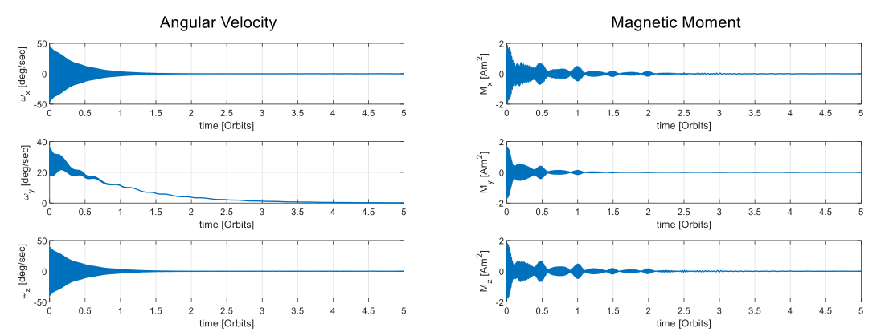
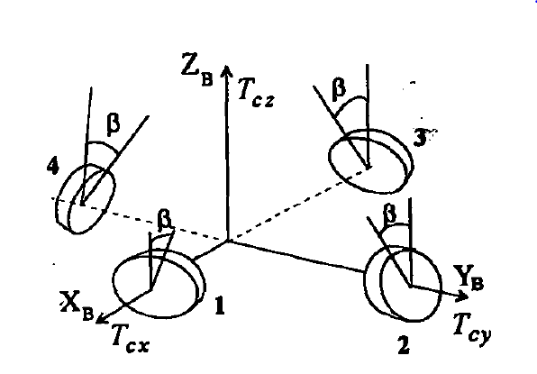
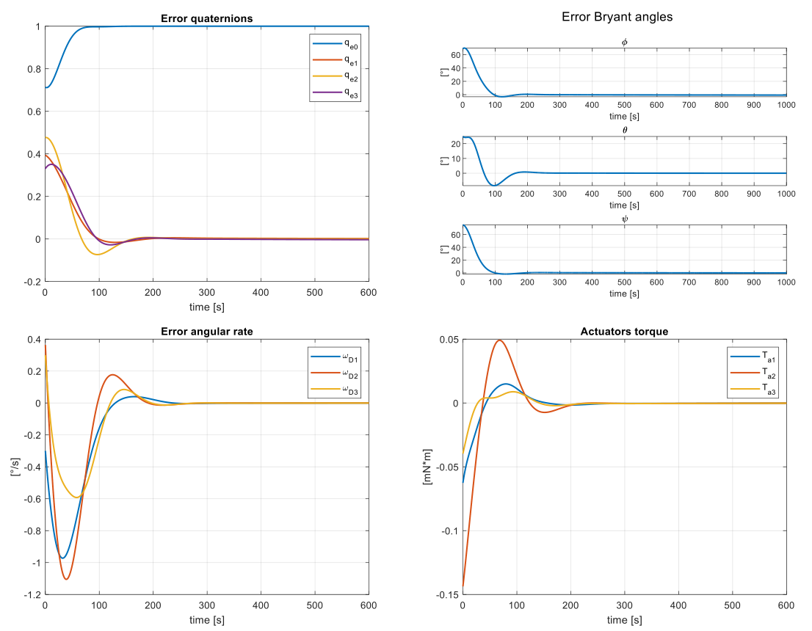
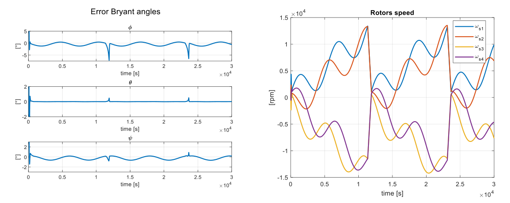